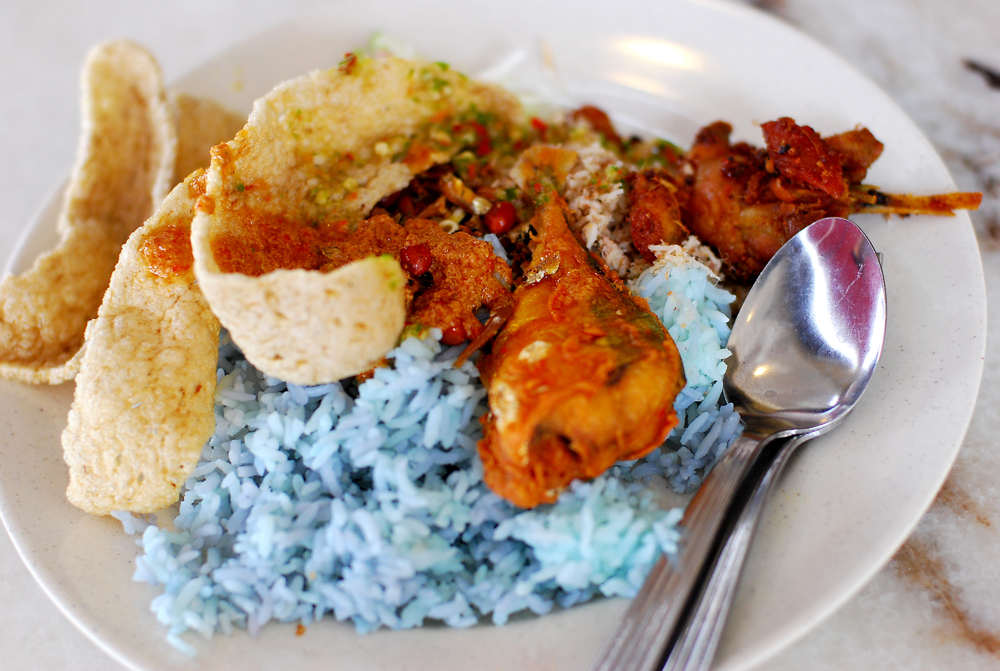

Nasi Kerabu

Description
Nasi means rice. Kerabu is a delicious type of salad made from vegetables and herbs! The rice is coloured blue through the use of butterfly pea flowers, also known as bunga telang or Clitoria ternatea.
Ingredients
For the rice:
- 10 dried bunga telang (butterfly pea flowers)
- 1 cup rice (rinsed and drained)
- 1 1/4 cup warm water (300ml)
For the kerabu:
The following are examples of what you can put in your kerabu.
- long beans
- bean sprouts
- cabbage
- kacang botol (angle beans)
- cucumber
- daun kesum
- daun kaduk
- limau purut
- serai
- bunga kantan
- daun kunyit
Steps
- Wash and drain the rice within rice cooker insert
- Soak the bunga telang (butterfly pea flowers) in warm water for 15 minutes.
- Strain the water into the rice cooker insert.
- Place rice cooker insert in rice cooker and cook.
- Next, finely chop your kerabu ingredients.
- Arrange rice, kerabu, kuah temis (spicy sauce) and proteins of your choice on a banana leaf-lined plate.
- Enjoy!
Credits
This recipe is heavily summarised from Roti and Rice, which provides more detailed instructions on how to actually make the dish.